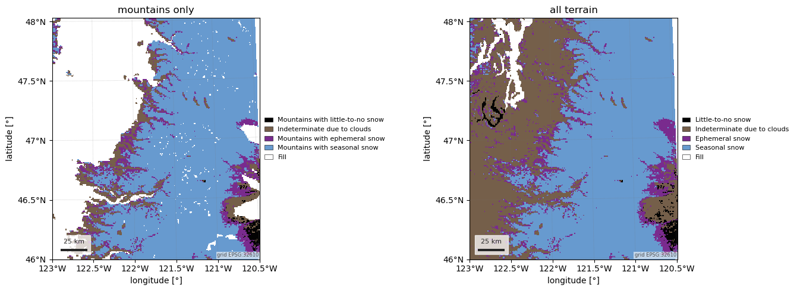
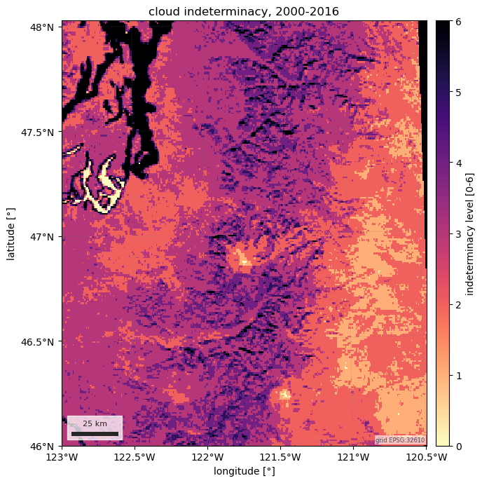

Note
Go to the end to download the full example code.
Mountain snow mask (Wrzesien et al.)#
Wrzesien et al. (2019) classified the MODIS MOD10A2 snow-cover record for
2000-2016 at 30 arcsec into little-to-no, ephemeral and seasonal snow, and
intersected it with a mountain definition based on GTOPO30 relief. The result
is three layers: mountain_snow (the classes over mountains only),
snow (the same classes over all terrain) and clouds (how often the
composite was indeterminate because of cloud).
One route, source="zenodo", with no credentials: one zipped GeoTIFF per
layer, fetched once into the easysnowdata cache.
The figures show the mountain and all-terrain layers side by side across the central Cascades and Puget lowlands, and the cloud-indeterminacy layer.
import matplotlib.pyplot as plt
import numpy as np
import easysnowdata as esd
aoi = (-123.0, 46.0, -120.5, 48.0) # the central Cascades, Puget Sound to Yakima
box = esd.parse_aoi(aoi)
grid = box.to_geobox(crs="utm", resolution=500) # every map below is drawn on this grid
print(box)
print(grid)
AOI(bounds=(-123.0000, 46.0000, -120.5000, 48.0000), clip=True)
GeoBox((451, 388), Affine(500.0, 0.0, 500000.0,
0.0, -500.0, 5319500.0), CRS('EPSG:32610'))
Where the product comes from, and what the route asks for.
for src in esd.catalog.get("mountain-snow-mask").sources:
print(f"{src.id:22} {src.title:45} {', '.join(src.requires) or 'no account'}")
zenodo Zenodo zip no account
The two class layers. In the mountain layer, Fill (255) is every pixel
that is not mountain by the relief criterion, so the lowlands drop out and
the mask says where seasonal snow is also mountain snow. The all-terrain
layer keeps them and classifies the Puget lowlands as ephemeral.
The layers are geographic; the box is loaded with a 2 km margin and each
is drawn on the AOI’s UTM grid, resampled nearest so the classes survive.
mountain_da = esd.snow.mountain_snow_mask.load(box.buffer(2000), layer="mountain_snow")
terrain_da = esd.snow.mountain_snow_mask.load(box.buffer(2000), layer="snow")
print(mountain_da.attrs["flag_meanings"])
fig, axes = plt.subplots(1, 2, figsize=(14, 5))
esd.plotting.categorical(
mountain_da.odc.reproject(grid, resampling="nearest"),
ax=axes[0],
title="mountains only",
)
esd.plotting.categorical(
terrain_da.odc.reproject(grid, resampling="nearest"),
ax=axes[1],
title="all terrain",
)
fig.tight_layout()
values, counts = np.unique(mountain_da.values, return_counts=True)
for value, count in zip(values, counts):
print(f"class {value:3d}: {count:6d} pixels")

Downloading data from 'https://zenodo.org/records/2626737/files/MODIS_mtnsnow_classes.zip' to file '/home/runner/.cache/easysnowdata/mountain_snow_mask/MODIS_mtnsnow_classes.zip'.
0%| | 0.00/13.7M [00:00<?, ?B/s]
0%| | 1.02k/13.7M [00:00<22:26, 10.1kB/s]
0%| | 35.8k/13.7M [00:00<01:15, 180kB/s]
1%|▎ | 109k/13.7M [00:00<00:33, 407kB/s]
1%|▌ | 185k/13.7M [00:00<00:25, 537kB/s]
2%|▋ | 258k/13.7M [00:00<00:25, 519kB/s]
3%|█ | 356k/13.7M [00:00<00:20, 654kB/s]
3%|█▏ | 425k/13.7M [00:00<00:20, 656kB/s]
4%|█▍ | 494k/13.7M [00:00<00:19, 659kB/s]
4%|█▋ | 575k/13.7M [00:00<00:18, 700kB/s]
5%|█▉ | 657k/13.7M [00:01<00:17, 728kB/s]
5%|██ | 739k/13.7M [00:01<00:17, 750kB/s]
6%|██▎ | 821k/13.7M [00:01<00:16, 762kB/s]
7%|██▋ | 935k/13.7M [00:01<00:14, 862kB/s]
7%|██▊ | 1.02M/13.7M [00:01<00:14, 859kB/s]
8%|███ | 1.11M/13.7M [00:01<00:14, 854kB/s]
9%|███▎ | 1.20M/13.7M [00:01<00:14, 848kB/s]
9%|███▌ | 1.28M/13.7M [00:01<00:14, 837kB/s]
10%|███▊ | 1.36M/13.7M [00:01<00:14, 832kB/s]
11%|████ | 1.46M/13.7M [00:02<00:14, 857kB/s]
11%|████▎ | 1.54M/13.7M [00:02<00:14, 851kB/s]
12%|████▌ | 1.64M/13.7M [00:02<00:13, 869kB/s]
13%|████▊ | 1.79M/13.7M [00:02<00:11, 1.04MB/s]
14%|█████ | 1.89M/13.7M [00:02<00:11, 1.03MB/s]
15%|█████▍ | 1.99M/13.7M [00:02<00:11, 1.02MB/s]
15%|█████▋ | 2.10M/13.7M [00:02<00:11, 1.02MB/s]
16%|██████ | 2.23M/13.7M [00:02<00:10, 1.09MB/s]
17%|██████▎ | 2.34M/13.7M [00:02<00:10, 1.08MB/s]
18%|██████▋ | 2.47M/13.7M [00:02<00:09, 1.15MB/s]
19%|███████ | 2.59M/13.7M [00:03<00:09, 1.14MB/s]
20%|███████▎ | 2.70M/13.7M [00:03<00:09, 1.13MB/s]
21%|███████▌ | 2.82M/13.7M [00:03<00:09, 1.10MB/s]
21%|███████▉ | 2.93M/13.7M [00:03<00:09, 1.09MB/s]
22%|████████▏ | 3.04M/13.7M [00:03<00:10, 1.06MB/s]
23%|████████▌ | 3.14M/13.7M [00:03<00:09, 1.05MB/s]
24%|████████▊ | 3.25M/13.7M [00:03<00:09, 1.05MB/s]
25%|█████████ | 3.35M/13.7M [00:03<00:10, 1.02MB/s]
25%|█████████▌ | 3.46M/13.7M [00:03<00:12, 786kB/s]
26%|█████████▊ | 3.54M/13.7M [00:04<00:12, 801kB/s]
27%|██████████ | 3.63M/13.7M [00:04<00:12, 805kB/s]
27%|██████████▎ | 3.72M/13.7M [00:04<00:12, 805kB/s]
28%|██████████▌ | 3.80M/13.7M [00:04<00:12, 797kB/s]
28%|██████████▊ | 3.88M/13.7M [00:04<00:12, 797kB/s]
29%|███████████ | 3.99M/13.7M [00:04<00:11, 875kB/s]
30%|███████████▎ | 4.09M/13.7M [00:04<00:10, 896kB/s]
31%|███████████▋ | 4.21M/13.7M [00:04<00:09, 960kB/s]
32%|███████████▋ | 4.34M/13.7M [00:04<00:09, 1.04MB/s]
32%|████████████ | 4.44M/13.7M [00:05<00:09, 1.01MB/s]
33%|████████████▎ | 4.55M/13.7M [00:05<00:08, 1.01MB/s]
34%|████████████▉ | 4.65M/13.7M [00:05<00:09, 982kB/s]
35%|█████████████▏ | 4.75M/13.7M [00:05<00:09, 970kB/s]
36%|█████████████▌ | 4.86M/13.7M [00:05<00:08, 991kB/s]
36%|█████████████▊ | 4.97M/13.7M [00:05<00:08, 977kB/s]
37%|██████████████ | 5.07M/13.7M [00:05<00:08, 969kB/s]
38%|██████████████▍ | 5.19M/13.7M [00:05<00:08, 976kB/s]
39%|██████████████▋ | 5.28M/13.7M [00:05<00:08, 958kB/s]
40%|██████████████▊ | 5.45M/13.7M [00:06<00:07, 1.13MB/s]
41%|███████████████ | 5.56M/13.7M [00:06<00:07, 1.12MB/s]
42%|███████████████▎ | 5.68M/13.7M [00:06<00:07, 1.11MB/s]
42%|███████████████▋ | 5.79M/13.7M [00:06<00:07, 1.10MB/s]
43%|███████████████▉ | 5.90M/13.7M [00:06<00:07, 1.09MB/s]
44%|████████████████▎ | 6.01M/13.7M [00:06<00:07, 1.08MB/s]
45%|████████████████▌ | 6.12M/13.7M [00:06<00:07, 1.08MB/s]
46%|████████████████▊ | 6.22M/13.7M [00:06<00:07, 1.06MB/s]
46%|█████████████████▏ | 6.33M/13.7M [00:06<00:06, 1.05MB/s]
47%|█████████████████▉ | 6.44M/13.7M [00:06<00:07, 961kB/s]
48%|██████████████████▏ | 6.53M/13.7M [00:07<00:09, 755kB/s]
49%|██████████████████▌ | 6.69M/13.7M [00:07<00:07, 940kB/s]
50%|██████████████████▉ | 6.80M/13.7M [00:07<00:07, 951kB/s]
50%|███████████████████▏ | 6.90M/13.7M [00:07<00:07, 944kB/s]
51%|███████████████████▍ | 7.00M/13.7M [00:07<00:07, 933kB/s]
52%|███████████████████▋ | 7.09M/13.7M [00:07<00:07, 925kB/s]
53%|███████████████████▉ | 7.19M/13.7M [00:07<00:07, 922kB/s]
53%|████████████████████▎ | 7.28M/13.7M [00:07<00:06, 921kB/s]
54%|████████████████████▌ | 7.38M/13.7M [00:08<00:06, 917kB/s]
55%|████████████████████▊ | 7.48M/13.7M [00:08<00:06, 927kB/s]
56%|████████████████████▋ | 7.62M/13.7M [00:08<00:05, 1.08MB/s]
57%|████████████████████▉ | 7.73M/13.7M [00:08<00:05, 1.07MB/s]
57%|█████████████████████▏ | 7.84M/13.7M [00:08<00:05, 1.06MB/s]
58%|█████████████████████▌ | 7.95M/13.7M [00:08<00:05, 1.05MB/s]
59%|█████████████████████▊ | 8.05M/13.7M [00:08<00:05, 1.05MB/s]
60%|██████████████████████ | 8.16M/13.7M [00:08<00:05, 1.04MB/s]
60%|██████████████████████▉ | 8.26M/13.7M [00:08<00:06, 797kB/s]
62%|███████████████████████▍ | 8.42M/13.7M [00:09<00:05, 990kB/s]
62%|███████████████████████ | 8.53M/13.7M [00:09<00:05, 1.01MB/s]
63%|███████████████████████▍ | 8.67M/13.7M [00:09<00:04, 1.10MB/s]
64%|███████████████████████▊ | 8.79M/13.7M [00:09<00:04, 1.10MB/s]
65%|████████████████████████ | 8.90M/13.7M [00:09<00:04, 1.09MB/s]
66%|████████████████████████▍ | 9.01M/13.7M [00:09<00:04, 1.09MB/s]
67%|████████████████████████▋ | 9.12M/13.7M [00:09<00:04, 1.09MB/s]
68%|█████████████████████████ | 9.24M/13.7M [00:09<00:04, 1.10MB/s]
68%|█████████████████████████▎ | 9.35M/13.7M [00:09<00:03, 1.10MB/s]
69%|█████████████████████████▌ | 9.46M/13.7M [00:10<00:03, 1.09MB/s]
70%|█████████████████████████▉ | 9.57M/13.7M [00:10<00:03, 1.08MB/s]
71%|██████████████████████████▏ | 9.68M/13.7M [00:10<00:03, 1.07MB/s]
72%|██████████████████████████▌ | 9.79M/13.7M [00:10<00:03, 1.07MB/s]
72%|██████████████████████████▊ | 9.90M/13.7M [00:10<00:03, 1.05MB/s]
73%|███████████████████████████ | 10.0M/13.7M [00:10<00:03, 1.05MB/s]
74%|███████████████████████████▎ | 10.1M/13.7M [00:10<00:03, 1.04MB/s]
75%|███████████████████████████▋ | 10.2M/13.7M [00:10<00:03, 1.03MB/s]
76%|███████████████████████████▉ | 10.3M/13.7M [00:10<00:03, 1.02MB/s]
76%|████████████████████████████▉ | 10.4M/13.7M [00:10<00:03, 983kB/s]
77%|█████████████████████████████▎ | 10.5M/13.7M [00:11<00:03, 963kB/s]
78%|█████████████████████████████▌ | 10.6M/13.7M [00:11<00:03, 959kB/s]
78%|█████████████████████████████▊ | 10.7M/13.7M [00:11<00:03, 952kB/s]
79%|██████████████████████████████ | 10.8M/13.7M [00:11<00:03, 948kB/s]
80%|██████████████████████████████▍ | 10.9M/13.7M [00:11<00:02, 969kB/s]
81%|██████████████████████████████▋ | 11.0M/13.7M [00:11<00:02, 943kB/s]
81%|██████████████████████████████▉ | 11.1M/13.7M [00:11<00:02, 936kB/s]
82%|███████████████████████████████▏ | 11.2M/13.7M [00:11<00:02, 940kB/s]
83%|██████████████████████████████▊ | 11.4M/13.7M [00:11<00:02, 1.09MB/s]
84%|███████████████████████████████ | 11.5M/13.7M [00:12<00:02, 1.08MB/s]
85%|███████████████████████████████▍ | 11.6M/13.7M [00:12<00:01, 1.10MB/s]
86%|███████████████████████████████▊ | 11.7M/13.7M [00:12<00:01, 1.20MB/s]
87%|████████████████████████████████ | 11.9M/13.7M [00:12<00:01, 1.19MB/s]
88%|████████████████████████████████▍ | 12.0M/13.7M [00:12<00:01, 1.18MB/s]
89%|████████████████████████████████▊ | 12.1M/13.7M [00:12<00:01, 1.18MB/s]
90%|█████████████████████████████████▏ | 12.3M/13.7M [00:12<00:01, 1.29MB/s]
91%|█████████████████████████████████▌ | 12.4M/13.7M [00:12<00:00, 1.28MB/s]
92%|█████████████████████████████████▉ | 12.5M/13.7M [00:12<00:00, 1.24MB/s]
93%|██████████████████████████████████▏ | 12.7M/13.7M [00:12<00:00, 1.21MB/s]
93%|██████████████████████████████████▌ | 12.8M/13.7M [00:13<00:00, 1.18MB/s]
94%|███████████████████████████████████▊ | 12.9M/13.7M [00:13<00:00, 901kB/s]
96%|███████████████████████████████████▎ | 13.1M/13.7M [00:13<00:00, 1.03MB/s]
96%|███████████████████████████████████▋ | 13.2M/13.7M [00:13<00:00, 1.03MB/s]
97%|███████████████████████████████████▉ | 13.3M/13.7M [00:13<00:00, 1.03MB/s]
98%|████████████████████████████████████▏| 13.4M/13.7M [00:13<00:00, 1.04MB/s]
99%|████████████████████████████████████▌| 13.5M/13.7M [00:13<00:00, 1.04MB/s]
99%|████████████████████████████████████▊| 13.6M/13.7M [00:13<00:00, 1.04MB/s]
0%| | 0.00/13.7M [00:00<?, ?B/s]
100%|█████████████████████████████████████| 13.7M/13.7M [00:00<00:00, 96.0GB/s]
SHA256 hash of downloaded file: 8fcb694da492113d4d1b0e9cc0fe2a0d277894619f1ff8a7a486bd19783bfc4f
Use this value as the 'known_hash' argument of 'pooch.retrieve' to ensure that the file hasn't changed if it is downloaded again in the future.
Downloading data from 'https://zenodo.org/records/2626737/files/MODIS_snow_classes.zip' to file '/home/runner/.cache/easysnowdata/mountain_snow_mask/MODIS_snow_classes.zip'.
0%| | 0.00/13.9M [00:00<?, ?B/s]
0%| | 14.3k/13.9M [00:00<01:53, 122kB/s]
0%| | 42.0k/13.9M [00:00<01:08, 203kB/s]
1%|▎ | 109k/13.9M [00:00<00:34, 399kB/s]
1%|▌ | 198k/13.9M [00:00<00:27, 502kB/s]
2%|▊ | 304k/13.9M [00:00<00:20, 673kB/s]
3%|█ | 399k/13.9M [00:00<00:18, 750kB/s]
4%|█▍ | 514k/13.9M [00:00<00:15, 860kB/s]
4%|█▋ | 612k/13.9M [00:00<00:15, 888kB/s]
5%|██ | 759k/13.9M [00:00<00:12, 1.05MB/s]
6%|██▍ | 873k/13.9M [00:01<00:12, 1.06MB/s]
7%|██▋ | 981k/13.9M [00:01<00:12, 1.05MB/s]
8%|██▉ | 1.09M/13.9M [00:01<00:12, 1.04MB/s]
9%|███▏ | 1.19M/13.9M [00:01<00:12, 1.03MB/s]
9%|███▍ | 1.30M/13.9M [00:01<00:12, 1.02MB/s]
10%|███▋ | 1.40M/13.9M [00:01<00:12, 1.01MB/s]
11%|████ | 1.54M/13.9M [00:01<00:11, 1.12MB/s]
12%|████▍ | 1.69M/13.9M [00:01<00:10, 1.21MB/s]
14%|█████ | 1.89M/13.9M [00:01<00:08, 1.40MB/s]
15%|█████▍ | 2.03M/13.9M [00:02<00:08, 1.39MB/s]
16%|█████▊ | 2.17M/13.9M [00:02<00:08, 1.37MB/s]
17%|██████ | 2.31M/13.9M [00:02<00:08, 1.35MB/s]
18%|██████▍ | 2.44M/13.9M [00:02<00:08, 1.33MB/s]
18%|██████▊ | 2.57M/13.9M [00:02<00:08, 1.32MB/s]
19%|███████▏ | 2.71M/13.9M [00:02<00:08, 1.30MB/s]
20%|███████▌ | 2.84M/13.9M [00:02<00:08, 1.29MB/s]
21%|███████▊ | 2.97M/13.9M [00:02<00:08, 1.28MB/s]
22%|████████▏ | 3.09M/13.9M [00:02<00:08, 1.26MB/s]
23%|████████▌ | 3.22M/13.9M [00:02<00:08, 1.24MB/s]
24%|█████████ | 3.35M/13.9M [00:03<00:11, 950kB/s]
25%|█████████▍ | 3.45M/13.9M [00:03<00:10, 967kB/s]
26%|█████████▋ | 3.56M/13.9M [00:03<00:10, 976kB/s]
26%|█████████▉ | 3.66M/13.9M [00:03<00:10, 982kB/s]
27%|██████████ | 3.78M/13.9M [00:03<00:09, 1.04MB/s]
28%|██████████▎ | 3.89M/13.9M [00:03<00:09, 1.04MB/s]
29%|██████████▌ | 4.00M/13.9M [00:03<00:09, 1.03MB/s]
29%|██████████▉ | 4.10M/13.9M [00:03<00:09, 1.03MB/s]
30%|███████████▏ | 4.21M/13.9M [00:04<00:09, 1.02MB/s]
31%|███████████▍ | 4.31M/13.9M [00:04<00:09, 1.01MB/s]
32%|████████████ | 4.41M/13.9M [00:04<00:09, 990kB/s]
32%|████████████▎ | 4.51M/13.9M [00:04<00:09, 975kB/s]
33%|████████████▌ | 4.61M/13.9M [00:04<00:09, 966kB/s]
34%|████████████▊ | 4.71M/13.9M [00:04<00:09, 958kB/s]
34%|█████████████ | 4.81M/13.9M [00:04<00:09, 949kB/s]
35%|█████████████▎ | 4.90M/13.9M [00:04<00:09, 940kB/s]
36%|█████████████▌ | 5.00M/13.9M [00:04<00:09, 930kB/s]
37%|█████████████▊ | 5.09M/13.9M [00:04<00:09, 920kB/s]
37%|██████████████ | 5.18M/13.9M [00:05<00:09, 911kB/s]
38%|██████████████▍ | 5.31M/13.9M [00:05<00:08, 996kB/s]
39%|██████████████▍ | 5.44M/13.9M [00:05<00:07, 1.07MB/s]
40%|██████████████▋ | 5.54M/13.9M [00:05<00:07, 1.06MB/s]
41%|██████████████▉ | 5.65M/13.9M [00:05<00:07, 1.05MB/s]
41%|███████████████▎ | 5.75M/13.9M [00:05<00:07, 1.04MB/s]
42%|███████████████▌ | 5.88M/13.9M [00:05<00:07, 1.07MB/s]
45%|████████████████▋ | 6.27M/13.9M [00:05<00:04, 1.88MB/s]
46%|█████████████████▏ | 6.48M/13.9M [00:05<00:03, 1.93MB/s]
51%|██████████████████▉ | 7.15M/13.9M [00:05<00:02, 3.29MB/s]
55%|████████████████████▏ | 7.63M/13.9M [00:06<00:01, 3.68MB/s]
63%|███████████████████████▏ | 8.72M/13.9M [00:06<00:00, 5.75MB/s]
67%|████████████████████████▉ | 9.38M/13.9M [00:06<00:00, 5.93MB/s]
82%|██████████████████████████████▏ | 11.4M/13.9M [00:06<00:00, 9.93MB/s]
93%|██████████████████████████████████▌ | 13.0M/13.9M [00:06<00:00, 11.7MB/s]
0%| | 0.00/13.9M [00:00<?, ?B/s]
100%|█████████████████████████████████████| 13.9M/13.9M [00:00<00:00, 96.6GB/s]
SHA256 hash of downloaded file: 01faaa1fb651b59e5aea433b65a18574b3ac9453694b6ce4c871506b644523d9
Use this value as the 'known_hash' argument of 'pooch.retrieve' to ensure that the file hasn't changed if it is downloaded again in the future.
Mountains_with_little-to-no_snow Indeterminate_due_to_clouds Mountains_with_ephemeral_snow Mountains_with_seasonal_snow Fill
/home/runner/work/easysnowdata/easysnowdata/.pixi/envs/docs/lib/python3.13/site-packages/rasterio/warp.py:385: NotGeoreferencedWarning: Dataset has no geotransform, gcps, or rpcs. The identity matrix will be returned.
dest = _reproject(
class 0: 572 pixels
class 1: 5971 pixels
class 2: 5243 pixels
class 3: 38444 pixels
class 255: 25538 pixels
The clouds layer is the indeterminacy level (0-6) behind the classes; the upstream record does not define the scale further, so it is kept as an integer without a class table. Rainier’s high terrain is where the MOD10A2 composites were most often indeterminate.
clouds_da = esd.snow.mountain_snow_mask.load(box.buffer(2000), layer="clouds")
ax = esd.plotting.map(
clouds_da.odc.reproject(grid, resampling="nearest"),
cmap="magma_r",
vmin=0,
vmax=6,
title="cloud indeterminacy, 2000-2016",
cbar_label="indeterminacy level [0-6]",
)
ax.figure.tight_layout()

Downloading data from 'https://zenodo.org/records/2626737/files/MODIS_clouds.zip' to file '/home/runner/.cache/easysnowdata/mountain_snow_mask/MODIS_clouds.zip'.
0%| | 0.00/25.9M [00:00<?, ?B/s]
0%| | 12.3k/25.9M [00:00<04:30, 95.6kB/s]
0%| | 41.0k/25.9M [00:00<02:13, 194kB/s]
0%|▏ | 115k/25.9M [00:00<01:01, 422kB/s]
1%|▎ | 197k/25.9M [00:00<00:45, 567kB/s]
1%|▌ | 338k/25.9M [00:00<00:29, 855kB/s]
2%|▋ | 477k/25.9M [00:00<00:24, 1.03MB/s]
3%|█▏ | 788k/25.9M [00:00<00:14, 1.68MB/s]
4%|█▌ | 1.12M/25.9M [00:00<00:11, 2.15MB/s]
7%|██▍ | 1.70M/25.9M [00:00<00:07, 3.24MB/s]
9%|███▎ | 2.33M/25.9M [00:01<00:05, 4.07MB/s]
11%|████ | 2.87M/25.9M [00:01<00:06, 3.68MB/s]
14%|█████ | 3.55M/25.9M [00:01<00:05, 4.27MB/s]
16%|█████▉ | 4.17M/25.9M [00:01<00:04, 4.74MB/s]
19%|██████▉ | 4.86M/25.9M [00:01<00:03, 5.27MB/s]
22%|███████▉ | 5.56M/25.9M [00:01<00:03, 5.67MB/s]
24%|████████▊ | 6.14M/25.9M [00:02<00:05, 3.37MB/s]
26%|█████████▍ | 6.61M/25.9M [00:02<00:05, 3.58MB/s]
28%|██████████▎ | 7.19M/25.9M [00:02<00:04, 4.01MB/s]
30%|███████████▎ | 7.88M/25.9M [00:02<00:03, 4.60MB/s]
33%|████████████▎ | 8.57M/25.9M [00:02<00:03, 5.07MB/s]
36%|█████████████▎ | 9.27M/25.9M [00:02<00:03, 5.43MB/s]
39%|██████████████▎ | 9.98M/25.9M [00:02<00:02, 5.80MB/s]
41%|███████████████▎ | 10.7M/25.9M [00:02<00:02, 6.10MB/s]
44%|████████████████▎ | 11.4M/25.9M [00:02<00:02, 6.27MB/s]
47%|█████████████████▍ | 12.2M/25.9M [00:02<00:02, 6.69MB/s]
50%|██████████████████▌ | 13.0M/25.9M [00:03<00:01, 6.90MB/s]
53%|███████████████████▌ | 13.7M/25.9M [00:03<00:01, 6.96MB/s]
56%|████████████████████▋ | 14.5M/25.9M [00:03<00:01, 5.82MB/s]
59%|█████████████████████▋ | 15.2M/25.9M [00:03<00:01, 6.01MB/s]
61%|██████████████████████▋ | 15.8M/25.9M [00:03<00:01, 6.14MB/s]
64%|███████████████████████▋ | 16.5M/25.9M [00:03<00:01, 6.21MB/s]
66%|████████████████████████▌ | 17.2M/25.9M [00:03<00:01, 6.24MB/s]
69%|█████████████████████████▌ | 17.8M/25.9M [00:03<00:01, 6.21MB/s]
71%|██████████████████████████▍ | 18.4M/25.9M [00:03<00:01, 6.04MB/s]
74%|███████████████████████████▍ | 19.2M/25.9M [00:04<00:01, 6.24MB/s]
77%|████████████████████████████▍ | 19.9M/25.9M [00:04<00:00, 6.38MB/s]
80%|█████████████████████████████▌ | 20.7M/25.9M [00:04<00:00, 6.62MB/s]
83%|██████████████████████████████▌ | 21.3M/25.9M [00:04<00:00, 5.96MB/s]
85%|███████████████████████████████▍ | 22.0M/25.9M [00:04<00:00, 5.79MB/s]
87%|████████████████████████████████▎ | 22.5M/25.9M [00:04<00:00, 5.75MB/s]
89%|█████████████████████████████████ | 23.1M/25.9M [00:04<00:00, 5.71MB/s]
92%|█████████████████████████████████▉ | 23.7M/25.9M [00:04<00:00, 5.61MB/s]
94%|██████████████████████████████████▋ | 24.3M/25.9M [00:04<00:00, 5.56MB/s]
96%|███████████████████████████████████▌ | 24.8M/25.9M [00:05<00:00, 5.52MB/s]
98%|████████████████████████████████████▎| 25.4M/25.9M [00:05<00:00, 5.49MB/s]
0%| | 0.00/25.9M [00:00<?, ?B/s]
100%|██████████████████████████████████████| 25.9M/25.9M [00:00<00:00, 159GB/s]
SHA256 hash of downloaded file: fe58d045c5046aef7cf54a61f65c84810a18c72a37fb0f6fb43e7ed71028ac2c
Use this value as the 'known_hash' argument of 'pooch.retrieve' to ensure that the file hasn't changed if it is downloaded again in the future.
Total running time of the script: (1 minutes 3.016 seconds)